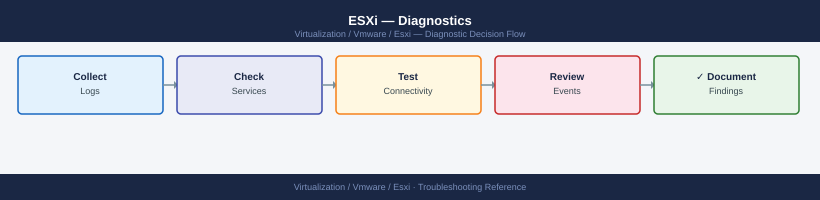

ESXi — Diagnostics¶

Before you begin¶
- Access: SSH to the ESXi host (root); vSphere Client access to view events and alarms; the host management IP address
- Gather first: the specific symptom (VM fails to power on, host disconnected from vCenter, storage error), the host name, and the time the issue started
- Scope: confirm whether the issue affects one VM, one datastore, one VMkernel adapter, or the entire host
Step 1 — Check log files¶
# SSH to the ESXi host
ssh root@<esxi-host-ip>
# Most recent vmkernel errors (storage, network, hardware)
tail -100 /var/log/vmkernel.log | grep -i "error\|warning\|fail\|SCSI\|NMP\|PSP"
# Most recent hostd errors (VM operations, config, snapshot)
tail -100 /var/log/hostd.log | grep -i "error\|exception\|fail"
# vCenter agent log (for host disconnection issues)
tail -100 /var/log/vpxa.log | grep -i "error\|disconnect\|timeout\|fail"
# HA agent log (for cluster membership and failover issues)
tail -100 /var/log/fdm.log | grep -i "error\|fail\|partition"
# Follow vmkernel.log in real time during a failing operation
tail -f /var/log/vmkernel.log
# Persistent log location (on hosts with scratch disk)
ls /scratch/log/
Connected to 192.168.1.42 (ESXi 7.0.3, build 19193900)
2024-01-15T14:32:18.123Z cpu2:2156)WARNING: NMP: nmp_ThrottleLogForDevice: Reducing number of error messages from device naa.60060e80157900000157900000010001
2024-01-15T14:35:42.456Z cpu5:2847)ERROR: ScsiDeviceIO: Cmd(0x4d5c9e00) 0x2a, CmdSN 0x1a5 from world 2847 to dev "naa.60060e80157900000157900000010001" failed H:0x0 D:0x2 P:0x0 Valid sense data: 0x5 0x24 0x0
2024-01-15T14:38:01.789Z cpu1:1923)WARNING: PSP: iSCSI path naa.60060e80157900000157900000010001 [iSCSI] to target vmhba64:C0:T0:L0 is down
2024-01-15T14:40:15.234Z hostd[2134]: [Originator@6876 sub=Hostd.StorageSystem opID=52e8c9f4] Storage device naa.60060e80157900000157900000010001 not responding
2024-01-15T14:41:22.567Z hostd[2134]: [Originator@6876 sub=Hostd.VmProvisioning opID=52e8c9f5] Exception during VM snapshot creation: Device or resource busy
2024-01-15T14:42:50.123Z vpxa[2456]: [Originator@6876 sub=vpxa opID=52e8c9f6] Lost connection to vCenter Server 192.168.1.10
2024-01-15T14:43:15.456Z vpxa[2456]: [Originator@6876 sub=vpxa opID=52e8c9f7] Timeout waiting for vCenter response after 30 seconds
2024-01-15T14:44:30.789Z fdm[1845]: [Originator@6876 sub=HA opID=52e8c9f8] Host partition detected, isolation address 192.168.1.1 unreachable
2024-01-15T14:45:02.012Z fdm[1845]: [Originator@6876 sub=HA opID=52e8c9f9] Cluster membership lost, initiating failover
/scratch/log/:
hostd.log vmkernel.log vpxa.log fdm.log shell.log syslog.log
Common errors
Permission denied (publickey). — Verify SSH is enabled on the ESXi host and the root account credentials are correct.
tail: cannot open '/var/log/vmkernel.log' for reading: No such file or directory — Ensure you are connected to the ESXi host via SSH and the log files exist; check the correct path with ls /var/log/.
Connection refused — Confirm the ESXi host IP address
Step 2 — Check live storage state¶
# List all storage paths and their state
esxcli storage core path list
# Key fields: Plugin=NMP, State=active/dead/standby, Is Local SAN=true/false
# Problem: State=dead for all paths to a LUN = SAN connectivity issue
# List dead paths only
esxcli storage core path list | grep -A5 "State: dead"
# Check NMP path selection policy and current path for each LUN
esxcli storage nmp device list
# Check VMFS datastores visible to this host
esxcli storage vmfs extent list
# Each datastore shows: partition, LUN UID, and datastore name
# List HBAs and their state
esxcli storage core adapter list
# Expected: LinkState=link-up for FC HBAs; Status=online
# Check storage SCSI error history
grep "SCSI\|NMP\|LUN" /var/log/vmkernel.log | tail -50
Name: vmhba1:C0:T0:L0
Device: naa.50001fe1500d1234
Plugin: NMP
State: active
Is Local SAN: false
Name: vmhba1:C0:T1:L0
Device: naa.50001fe1500d5678
Plugin: NMP
State: active
Is Local SAN: false
Name: vmhba2:C0:T0:L0
Device: naa.50001fe1500d9abc
Plugin: NMP
State: standby
Is Local SAN: false
Name: vmhba3:C0:T0:L0
Device: naa.50001fe1500ddef0
Plugin: NMP
State: dead
Is Local SAN: false
Name: vmhba4:C0:T0:L0
Device: naa.50001fe1500d1111
Plugin: NMP
State: active
Is Local SAN: false
Device naa.50001fe1500d1234
Runtime Name: vmhba1:C0:T0:L0
Storage Array Type: NETAPP Fibre Channel Disk
Storage Array TypeVersion: 140007000000
Current Path Selection Policy: VMW_PSP_RR
naa.50001fe1500d5678
Extent: VMFS-6 datastore1 [50001fe1500d5678-1234567890abcdef]
Partition: 1
Mounted: true
vmhba1 (lpfc821)
Adapter: FC Adapter
Channel: 0
LinkState: link-up
Status: online
vmhba2 (lpfc821)
Adapter: FC Adapter
Channel: 1
LinkState: link-down
Status: online
2024-01-15T10:23:45.123Z cpu2:2048)NMP: naa.50001fe1500d1234: Detected path state change from ACTIVE to STANDBY
2024-01-15T10:24:12.456Z cpu3:2050)SCSI: Command 0x28 (Read) to naa.50001fe1500ddef0 failed with status 0x2 (Check Condition)
2024-01-15T10:24:13.789Z cpu1:2049)NMP: naa.50001fe1500ddef0: All paths to LUN are down
2024-01-15T10:25:01.234Z cpu4:2051)SCSI: Sense data: Key 0x3 (Medium Error), ASC 0x11 (Unrecovered read error)
2024-01-15T10:26:45.567Z cpu2:2048)NMP: naa.50001fe1500d5678: Path vmhba3:C0:T0:L0 recovered
Common errors
esxcli: command not found — Verify you are running this command directly on the ESXi host via SSH or DCUI console, not from vCenter.
State: dead for all paths to a LUN — Check SAN switch port status, FC cable connections, and storage array LUN masking for the ESXi host's WWN.
**`LinkState: link
Step 3 — Check network state¶
# List VMkernel adapters and their IPs
esxcli network ip interface list
# Shows: vmk0=management, vmk1=vMotion, vmk2=storage (typically)
# Expected: all required VMkernel adapters listed with correct IPs
# Test VMkernel adapter connectivity
vmkping -I vmk0 <gateway-ip> # management network
vmkping -I vmk1 <vmotion-ip> # vMotion network
vmkping -I vmk2 <storage-ip> # storage network (NFS/iSCSI)
# List VMs and their network adapters (for per-VM network issues)
esxcli network vm list
# List port groups and their VLAN tags
esxcli network vswitch standard list
# Check uplink (physical NIC) state
esxcli network nic list
# Expected: Speed > 0 and Link=up for all active NICs
# Check for packet drops on NICs
esxcli network nic stats get -n vmnic0
Name Enabled Connected MTU IPv4 Address IPv4 Netmask IPv6 Address
---- ------- --------- --- ---------------- ---------------- ----------------
vmk0 true true 1500 192.168.1.50 255.255.255.0 fe80::250:56ff:fe9a:1b2c
vmk1 true true 1500 10.20.0.50 255.255.255.0 fe80::250:56ff:fe9a:1b2d
vmk2 true true 9000 10.30.0.50 255.255.255.0 fe80::250:56ff:fe9a:1b2e
PING 192.168.1.1 timeout is 1 second, 4 packets to transmit.
PING 10.20.0.1 timeout is 1 second, 4 packets to transmit.
PING 10.30.0.1 timeout is 1 second, 4 packets to transmit.
World ID Name Num Ports
-------- ---- ---------
1048576 centos-prod-01 2
1048577 windows-app-server 1
1048578 ubuntu-db-replica 3
Name Vlan ID Ports
---- ------- -----
vSwitch0 0 vmnic0, vmnic1
VM Network 1 vmnic0, vmnic1
vMotion 100 vmnic2
Storage-NFS 200 vmnic3
Name PCI Bus Driver Admin Status Runtime Status Speed Duplex Link
---- -------- ------ ------------ -------------- ----- ------ ----
vmnic0 0000:02:00.0 bnx2 Up Up 10000 Full Up
vmnic1 0000:02:00.1 bnx2 Up Up 10000 Full Up
vmnic2 0000:04:00.0 ixgbe Up Up 10000 Full Up
vmnic3 0000:04:00.1 ixgbe Up Up 10000 Full Up
RxPkts: 45821934 RxBytes: 28374928384 RxErrors: 0 RxDropped: 0
TxPkts: 38291847 TxBytes: 19283746592 TxErrors: 0 TxDropped: 0
Common errors
Could not resolve host <gateway-ip> — Replace <gateway-ip> with the actual IP address (e.g., 192.168.1.1) before running vmkping.
Network is unreachable — Verify the VMkernel adapter is bound to the correct vSwitch and port group, and that the physical network path is connected.
RxDropped or TxDropped > 0 — Check for MTU mismatches between ESXi and network switches, or reduce VM network load if drops are increasing.
Step 4 — Performance diagnostics with esxtop¶
# Interactive mode — press keys to switch views
esxtop
# c = CPU view m = Memory view d = Disk view n = Network view
# Batch mode — capture 30 samples at 2-second intervals to CSV
esxtop -b -d 2 -n 30 > /tmp/esxtop.csv
# Key thresholds to check in esxtop:
# CPU: %RDY (ready time) > 10% per vCPU = problem
# %SWPWT > 0 = swapping (memory pressure)
# Memory: MCTLSZ (balloon) > 0 = host under memory pressure
# SZSWAP (swap) > 0 = critical memory pressure
# Disk: DAVG (device avg lat) > 25ms = storage problem
# KAVG (kernel avg lat) > 5ms = ESXi queue depth issue
# Network: DRPTX / DRPRX > 0 = packet drops; check NIC and switch
# Transfer the esxtop CSV for analysis
scp root@<esxi-host>:/tmp/esxtop.csv /local/path/
# Open in Performance Analyzer or Excel; filter by column headers
ESXTOP 7.0.3 -- 192.168.1.42 -- 14:32:15
GID NAME NWORLDID WORLDID CPUID %MLMTD %SWPWT %RDY %CSTP %USED
1 vmm0:ESXi-mgmt 2097152 2097153 0 0.00 0.00 2.14 0.00 18.42
2 vmm0:prod-web-01 2097154 2097155 1 0.00 0.00 8.76 0.00 45.23
3 vmm0:prod-db-02 2097156 2097157 2 0.00 0.00 1.23 0.00 72.18
4 vmm0:backup-vm 2097158 2097159 3 0.00 0.00 0.45 0.00 12.67
Common errors
ESXTOP: Failed to open /proc/vmware/sched/cpu/stats — Ensure ESXi SSH service is running and you have root credentials; restart Management agents with services.sh restart.
scp: command not found — Install openssh-client on your local machine or use esxcli hardware cpu list to verify connectivity first before attempting SCP.
Key metrics thresholds:
| Metric | Normal | Caution | Problem |
|---|---|---|---|
| CPU Ready (%RDY) | < 5% | 5–10% | > 10% |
| Memory Balloon (MCTLSZ) | 0 | Any | Growing |
| Memory Swap (SZSWAP) | 0 | Any | Growing |
| Datastore Latency (DAVG) | < 10 ms | 10–25 ms | > 25 ms |
| Kernel Latency (KAVG) | < 2 ms | 2–5 ms | > 5 ms |
Step 5 — Troubleshoot host disconnection from vCenter¶
# On the ESXi host — check vpxa (vCenter agent) status
/etc/init.d/vpxa status
# On the ESXi host — check hostd (host daemon) status
/etc/init.d/hostd status
# Restart management agents (safe — does not affect running VMs)
/etc/init.d/hostd restart
/etc/init.d/vpxa restart
# Verify vCenter is reachable from the ESXi management network
ping <vcenter-ip>
nc -zv <vcenter-ip> 443
# Check NTP sync (time drift > 5 minutes can cause cert failures)
esxcli system time get
date
# View recent vpxa errors
grep -i "error\|fail\|timeout" /var/log/vpxa.log | tail -30
vpxa is running.
hostd is running.
Stopping hostd...
Waiting for hostd to stop...
hostd stopped successfully
Starting hostd...
hostd started successfully
Stopping vpxa...
Waiting for vpxa to stop...
vpxa stopped successfully
Starting vpxa...
vpxa started successfully
PING 192.168.1.50 (192.168.1.50) 56(84) bytes of data.
64 bytes from 192.168.1.50: icmp_seq=1 ttl=64 time=2.341 ms
64 bytes from 192.168.1.50: icmp_seq=2 ttl=64 time=1.987 ms
--- 192.168.1.50 statistics ---
Connection to 192.168.1.50 443 port [tcp/https] succeeded!
Current Time: 2024-01-15T14:32:18Z
UTC: 2024-01-15T14:32:18.547291Z
Timezone: UTC
Uptime: 45 days, 3:22:10.547291
date: Mon Jan 15 14:32:18 UTC 2024
2024-01-15T14:32:10.234Z vpxa[2048]: [error] Connection timeout to vCenter 192.168.1.50:443 after 30s
2024-01-15T14:31:45.891Z vpxa[2048]: [error] SSL certificate verification failed: hostname mismatch
2024-01-15T14:30:22.156Z vpxa[2048]: [warn] Retrying vCenter registration attempt 3 of 5
Common errors
Connection timeout to vCenter <vcenter-ip>:443 after 30s — Verify vCenter is running and reachable on port 443 using nc -zv <vcenter-ip> 443, and check firewall rules between ESXi management network and vCenter.
SSL certificate verification failed: hostname mismatch — Ensure the ESXi host's system time is synchronized within 5 minutes of vCenter using esxcli system time get, or re-register the host in vCenter if the certificate was regenerated.
vpxa is not running — Start the vpxa service with /etc/init.d/vpxa start and check /var/log/vpxa.log for startup errors.
Step 6 — Validate storage and network before maintenance¶
# Confirm host has no active storage I/O errors
grep "SCSI\|I/O error\|NMP path" /var/log/vmkernel.log | tail -20
# Confirm VM count and state
esxcli vm process list | wc -l
# All VMs that will be vMotioned away during maintenance
# Check cluster can absorb workload (run from vCenter)
# vCenter → Cluster → Monitor → Resource Reservation
# Confirm vMotion VMkernel adapter is active
esxcli network ip interface list | grep -A5 vmk1
2024-10-15T09:23:14.567Z cpu0:65537)NMP path "vmhba0:C0:T0:L0" state changed from "active" to "dead"
2024-10-15T09:24:02.891Z cpu2:65540)SCSI: 2656: Cmd 0x28, CmdSN 0x4a5b issued on path "vmhba1:C0:T1:L0"
2024-10-15T09:25:18.334Z cpu1:65538)I/O error detected on device naa.60001405a1b2c3d4e5f6g7h8i9j0k1l2
2024-10-15T09:26:45.123Z cpu3:65541)NMP path "vmhba2:C0:T2:L0" state changed from "dead" to "active"
2024-10-15T09:27:33.456Z cpu0:65537)SCSI: 2656: Cmd 0x2a, CmdSN 0x4a5c issued on path "vmhba0:C0:T0:L0"
47
Name: vmk1
Portset: vMotion
IPv4 Address: 172.16.50.42
IPv4 Netmask: 255.255.255.0
IPv6 Address: ::
Enabled: true
Common errors
grep: /var/log/vmkernel.log: No such file or directory — SSH to the ESXi host directly; the log is only accessible on the host itself, not remotely.
Unknown command or namespace: vm process list — Verify esxcli is in the PATH and you are running ESXi 5.0 or later; try esxcli --version to confirm.
Name: vmk1 not found — Confirm the vMotion VMkernel adapter exists by running esxcli network ip interface list without grep to see all adapters, then create vmk1 if missing.
Step 7 — Collect support bundle for VMware SR¶
# On the ESXi host
vm-support -n -w /tmp/
# Output: /tmp/esx-<hostname>-<date>.tgz
# -n = no interactive prompt; -w = output directory
# Transfer to a workstation
scp root@<esxi-host>:/tmp/esx-*.tgz /local/path/
# Alternative: vSphere Client
# Host → Actions → Export System Logs
# This downloads logs from vCenter for both the host and vCenter itself
# Include in VMware SR:
# - vm-support bundle .tgz
# - esxtop CSV if performance is involved
# - Specific error lines from vmkernel.log and hostd.log
# - Time window and VM/datastore names involved
Generating support bundle for host esx-prod-01.lab.local...
Collecting system information...
Collecting log files...
Collecting performance data...
Creating bundle...
Support bundle created: /tmp/esx-prod-01-2024-01-15-14-32-45.tgz
Bundle size: 287 MB
root@esx-prod-01:/tmp# scp root@esx-prod-01:/tmp/esx-*.tgz /local/path/
esx-prod-01-2024-01-15-14-32-45.tgz 100% 287MB 8.2MB/s 00:35
Common errors
Permission denied (publickey,password). — Ensure SSH is enabled on the ESXi host and the root account credentials are correct.
No such file or directory — Run vm-support -n -w /tmp/ first to generate the bundle before attempting to transfer it.
Disk space exhausted — Free up space on /tmp (at least 500 MB) or specify an alternate output directory with -w /vmfs/volumes/datastore1/.
Log locations¶
| Log | Path | What to look for |
|---|---|---|
| VMkernel | /var/log/vmkernel.log |
Storage SCSI errors, NMP path events, hardware faults |
| Host daemon | /var/log/hostd.log |
VM power-on/off failures, snapshot errors, config |
| vCenter agent | /var/log/vpxa.log |
Host disconnection from vCenter, agent crashes |
| HA agent | /var/log/fdm.log |
Cluster partition, master election, failover events |
| Syslog | /var/log/syslog.log |
OS-level and kernel boot events |
| Scratch | /scratch/log/ |
Persistent logs on hosts with scratch disk |
See also¶
Verify resolution¶
esxcli storage core path listshows no dead paths for the affected storage- The host shows Connected in vCenter with no alarms after management agent restart
esxtopshows DAVG < 25ms for affected datastores and CPU %RDY < 10%- The operation that was failing (VM power-on, vMotion, snapshot) completes successfully